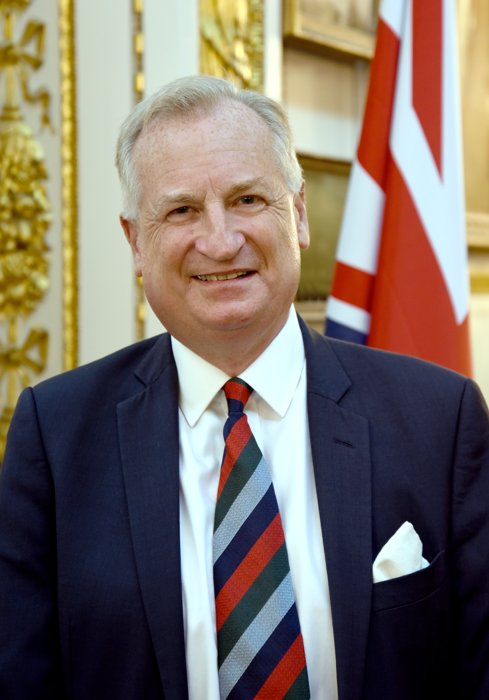
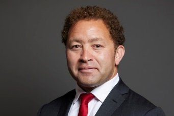
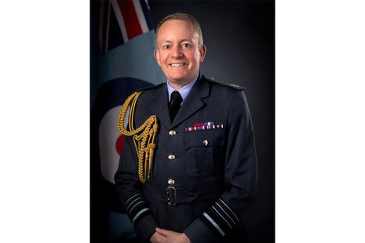
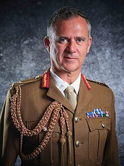
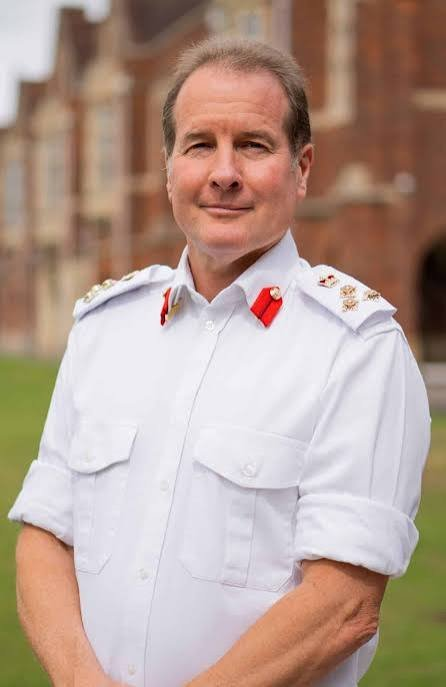
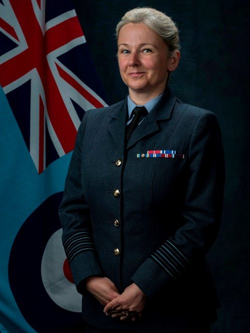
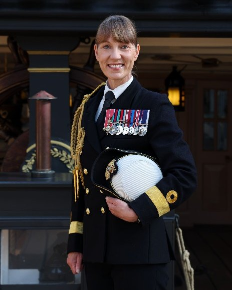
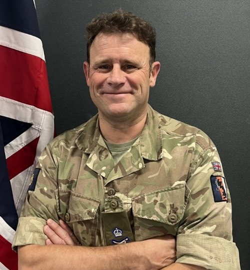
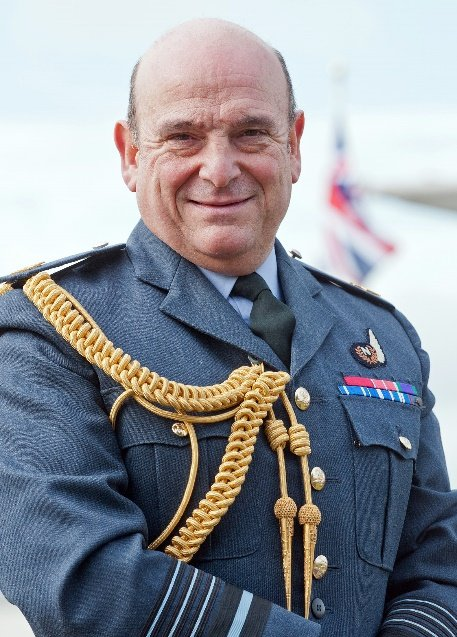

4 November 2026, Lancaster HouseRFCA Annual Conference 2026: Connecting Defence with Society
Joining details, programme and speakers for the RFCA Annual Conference.
Introduction
The Reserve Forces' and Cadets' Associations (RFCA) Annual Conference, Connecting Defence with Society, will be held at Lancaster House on 4 November 2026.
This page gives joining details for speakers and guests.
Background
The conference is an opportunity to discuss the vital contribution of the RFCA network in connecting Defence with wider society. It welcomes Ministers and senior guests to discuss the future of the UK Cadet Forces and the Reserves estate, and the whole of society approach.
Venue
Address: Lancaster House, Stable Yard, London SW1A 1BB. The conference will be held in the Long Gallery.
Getting there: Lancaster House is a 5 minute walk from Green Park underground station. CHECK: add step free access details and how guests should tell us about accessibility needs
Security: photo ID is required to enter the building. Acceptable ID includes a passport, driving licence, MOD 90 or Veterans ID card. CHECK: confirm whether the name on the ID must match the guest list, and any rules on bags and electronic devices
Reception: the RFCA team will welcome guests outside and check ID. Badges and documents will be issued inside the building. Cloakrooms are available, and changing rooms are available for speakers who wish to change.
Timings
Doors open at 08:00. CHECK: confirm registration time. V1 said registration starts between 08:15 and 08:30, but the programme shows registration and refreshments from 08:30 to 09:30 The first session starts at 09:30.
The event should finish by 14:00, after lunch and networking. All guests should have left the building by 14:15.
Photography and videography
Content will be captured during the event, by the internal team and an approved photographer, to promote the conference during and afterwards.
Guests who do not wish to appear in photographs should tell the RFCA team. Signs will be displayed on the day as a reminder. CHECK: confirm whether a privacy notice is needed
Dress code
The dress code is:
- Speakers: Service or No 2 Dress, with no leather or medals. CHECK: confirm this instruction, and what military guests who are not speakers should wear
- Guests: business attire.
Guests
Guests at the conference are:
- Attendees: members from the 13 RFCAs across the network, influencers from the Armed Forces community and other distinguished guests.
- The RFCA team will be on hand throughout the event to support and inform guests.
Contact
CHECK: add name, telephone and email for queries before the event and on the day
Programme
| Time | Minutes | Item |
|---|---|---|
| 08:30 to 09:30 | 60 | Registration and morning refreshments |
| 09:30 to 09:40 | 10 | Introduction by the Board Chair, Captain N R V Dorman RD VR RNR CHECK: surname (V1 had Dorman and Doman) and initials |
| 09:40 to 10:25 | 45 | Minister for Veterans and People, Calvin Bailey MBE MP and Chief of the Defence Staff, Air Chief Marshal Sir Richard Knighton KCB ADC FREng |
| 10:25 to 10:55 | 30 | Coffee and networking |
| 10:55 to 11:10 | 15 | Assistant Chief of the Defence Staff (RF&C), Major General The Lord Lancaster of Kimbolton TD VR CHECK: PC and DL appear in different places in V1 |
| 11:10 to 11:25 | 15 | Head Cadets, RF&C, Brigadier Anthony Lamb MBE DL VR: Cadet Action Plan |
| 11:25 to 12:35 | 70 | Panel discussion
CHECK: panel chair or moderator, and whether Commodore Jo Adey is on the panel. She has a biography in V1 but is not in the programme |
| 12:35 to 13:10 | 35 | Commander Standing Joint Command, Lieutenant General Paul Griffiths CB |
| 13:10 to 13:20 | 10 | President CRFCA, Air Chief Marshal The Lord Peach of Grantham GBE KCB DL: closing address and summary CHECK: V1 had KG GCB KCB DL, which does not match the biography |
| 13:20 to a/r | a/r | Lunch and networking |
a/r means as required.
Speakers
Captain Nick Dorman RD VR RNR
Board Chair, Council of RFCAs

Captain Dorman joined the RNR in 1984 at HMS CAMPERDOWN as a reserve University Midshipman. His first summer was spent at Britannia Royal Naval College, and his later leave periods were spent at sea, principally on a variety of Ton class MCMVs. After three years as First Lieutenant at HMS SCOTIA, where he led the start up of TAY Division in Dundee, he was appointed in 2001 to the Commodore's Staff as the National Junior Officer Training Officer. This was a newly created post, and he coordinated and delivered the training of junior officers at national level. He was Officer in Charge of TAY Division before taking command of SCOTIA in April 2006. After three and a half years in command he was promoted Captain in September 2009, and in November 2011 he was appointed Captain Operational Capability 2 and Captain (Regions) North.
CHECK: the V1 biography stops in 2011. Add later career and his appointment as Board Chair. Confirm post nominals
Calvin Bailey MBE MP
Minister for Veterans and People

Calvin Bailey was born in Zambia and raised in south east London. An RAF scholar, he read Engineering and Engineering Management at the University of Exeter. He was elected as the MP for Leyton and Wanstead in July 2024 and appointed Minister for Veterans and People in the Ministry of Defence in June 2026. CHECK: appointment date
He was commissioned as a pilot into the RAF in 1999, flying mainly C-130 and A400M aircraft. He deployed on operations worldwide, including time in Afghanistan, Haiti, Cyprus, Sudan and Iraq. He helped establish the Armed Forces Chronic Conditions and Disabilities Network and chaired the RAF Ethnic Minorities Network.
As a parliamentarian he has been a member of the House of Commons Select Committee on Defence and Chair of the Armed Forces Community All Party Parliamentary Group. CHECK: current roles, as these may have changed on his ministerial appointment
He was awarded the US Air Medal for his service with the US Air Force in 2007 and the MBE in 2013.
Air Chief Marshal Sir Richard Knighton KCB ADC FREng
Chief of the Defence Staff

Brought up in Derbyshire and educated at the local comprehensive school, Sir Richard joined the Royal Air Force in 1988 as a University Cadet and studied Engineering at Clare College, Cambridge. He spent his early career in frontline roles working on Nimrod Maritime Patrol Aircraft, Tornado and in several roles within the Harrier Force. He served as Station Commander at Royal Air Force Wittering, where he was also the RAF's Logistics Force Commander.
He has held a range of staff appointments in the Ministry of Defence, Air Command and in acquisition and support. He has been closely involved in strategic and capability planning, including as Deputy Chief of the Defence Staff for Military Capability in the Ministry of Defence and Deputy Commander Capability and People in the Royal Air Force.
As Chief of the Air Staff he was responsible for the strategic planning and delivery of all aspects of Royal Air Force operations, people and capability. He led the RAF during the most intense period of operational demand on the Service for more than a decade, with the Royal Air Force operating alongside global allies, including conducting air strikes against Houthi rebels in Yemen, protecting NATO skies and supplying much needed aid to Gaza and Ukraine.
He has completed the Advanced Command and Staff Course and attended the Royal College of Defence Studies and the UK Pinnacle Course. He is a Fellow of the Royal Academy of Engineering, holds an Honorary Doctorate from the University of Derby and is an Honorary Fellow of Clare College, Cambridge. He is an ambassador for the Royal Air Force Charitable Trust and the Royal Air Forces Association. He was appointed to the Military Division of the Most Honourable Order of the Bath as a Commander (CB) in 2017 and as a Knight Commander (KCB) in 2023.
Sir Richard became Chief of the Defence Staff in September 2025. CHECK: V1 said the Prime Minister announced this on 27 June 2025 and that he would take up the post from September 2025. Confirm the wording and date
Major General The Lord Lancaster of Kimbolton TD VR
Assistant Chief of the Defence Staff (RF&C)

Lord Lancaster entered the House of Lords in September 2020, having previously served as a Member of Parliament from 2005 to 2019. He served as a Defence Minister from 2012 to 2019, latterly as Minister for the Armed Forces. A qualified Bomb Disposal Officer, he has served on operations in Kosovo, Bosnia and Afghanistan with NATO. He continues to serve in the Army Reserve as a Major General. He is Colonel Commandant of the Brigade of Gurkhas and Honorary Colonel of The Cayman Islands Regiment. Away from politics he is a Director of Hampshire Cricket Club and holds several board level directorships.
CHECK: V1 said he is also Director of the UK Army Reserve, which conflicts with Major General Marc Overton's post and with his own role as ACDS (RF&C). Confirm his post nominals (V1 had TD, VR and PC in the biography and TD, DL and VR in the programme) and whether the Hampshire Cricket Club line is current
Brigadier Anthony Lamb MBE DL VR
Head Cadets, RF&C

CHECK: no biography in V1. Request from the Head Cadets office. Confirm post nominals (VR is in the biography heading but not the programme)
Major General Marc Overton CB TD DL VR
Army Reserve Forces Director
CHECK: no biography or photograph in V1. Request from his office. V1 gave his title as Army D Reserves
Air Vice Marshal Jo Lincoln MBE
Commandant General of the Royal Auxiliary Air Force and Director Reserves

After graduating with an honours degree in Business Administration (with Spanish), Jo Lincoln joined the Royal Air Force in 1997 and is an experienced military logistics officer. In August 2025 she was promoted Air Vice Marshal in the Royal Air Force Reserves and became Commandant General Royal Auxiliary Air Force and Director Reserves, succeeding Air Vice Marshal R T I Munro CB CBE. CHECK: V1 mixed this with an earlier announcement that referred to her as Group Captain, taking over from Group Captain Tony Keeling. That text has been removed. Confirm the wording
Commodore Suzi Nielsen OBE ADC
Commander Maritime Reserves

CHECK: no biography in V1. Request from her office. V1 spelled her surname Nielsen in the programme and Nielson in the biography heading
Lieutenant General Paul Griffiths CB
Commander Standing Joint Command

Educated at Blue Coat Grammar School and commissioned into the Royal Corps of Signals in 1993, Lieutenant General Paul Griffiths has served operationally in Northern Ireland, the Balkans, Iraq and Afghanistan.
Following several junior appointments and completion of the Advanced Command and Staff Course, he was posted to the MOD Main Building as an SO1 in Army Resources and Plans. He then commanded the 3rd (United Kingdom) Division's Signal Regiment, deploying the unit to locations across Afghanistan. Following that command he became an adviser to the Chief of the General Staff and then worked as his Military Assistant. On promotion to Colonel, he was a Deputy Assistant Chief of Staff in the Field Army. He took command of 1st (United Kingdom) Signal Brigade in 2016 and completed the Higher Command and Staff Course. Following brigade command, he was assigned to his fourth tour in Whitehall. Promoted to Major General in 2021, he was appointed Director Personnel in Army Headquarters and for this work was made a Companion of the Most Honourable Order of the Bath. In August 2023 he became the Assistant Chief of the General Staff, where he played a leading role in guiding the Army through the Strategic Defence Review.
In June 2025 he was appointed Master of Signals and in September 2025 he was promoted Lieutenant General, assuming the role of Commander Standing Joint Command.
Air Chief Marshal The Lord Peach of Grantham GBE KCB DL
President CRFCA

CHECK: post nominals. The V1 programme had KG GCB KCB DL, but the biography records a GBE in 2016 and a KCB in 2009
Commissioned into the Royal Air Force in 1974, he flew Canberras in the photographic reconnaissance role assigned to FIVEATAF in Italy, before three successive tours on Tornado GR1 in the UK and Germany, qualifying as a nuclear, weapons and electronic warfare instructor. He commanded IX (Bomber) Squadron at RAF Brüggen in Germany from 1994 to 1996, acting as Brüggen Strike Wing Leader for NATO response missions, both nuclear and conventional. Staff tours include personal staff officer to the Deputy Commander and Commander in Chief in RAF Germany, Executive Officer to Commander TWOATAF and Director Defence Studies Royal Air Force. He has written widely on defence issues.
Operational service includes Belize, Hong Kong and Germany in the 1980s, Deputy Commander British Forces in Turkey (Op Warden), UK Head Military Coordination Centre Zakho (Iraq), Detachment Commander in Saudi Arabia (Op Jural), Commander British Forces in Italy (Op Engadine) and Battle Staff Director NATO CAOC Vicenza, Air Commander (Forward) in HQ KFOR (NATO) in Kosovo and Deputy Senior British Military Adviser in US HQ Central Command from 2001 to 2002.
He commanded the Air Warfare Centre at RAF Waddington from 2000 to 2003, where he was also UK Director of Electronic Warfare in support of NATO (and is a Gold Medal "Old Crow"). He was Director General Intelligence Collection in the Ministry of Defence from 2003 to 2006 and Chief of Defence Intelligence and Deputy Chairman of the UK Joint Intelligence Committee from 2006 to 2009, where he held the UK seat at the NATO Intelligence Board. He was Chief of Joint Operations at PJHQ (UK) from March 2009 to December 2011, commanding all UK force elements in support of NATO operations in Afghanistan, Iraq and Libya, before becoming the first Commander of UK Joint Forces Command from December 2011 to April 2013. He was Vice Chief of the Defence Staff from May 2013 to May 2016, with responsibility for all UK military personnel in NATO. He was Chief of the Defence Staff from July 2016 to June 2018 and became Chairman of the Military Committee of NATO in June 2018, his fourth four star appointment. CHECK: the biography stops in 2018. Add later roles and his role as President CRFCA
He is a Deputy Lieutenant of the County of Lincolnshire, holds the freedom of the City of London, is a Fellow of the Royal College of Defence Studies and is an Honorary Fellow of Downing College, Cambridge, and of the Royal Institute of Navigation. He was awarded the Queen's Commendation for Valuable Service in the Air in 1990, an operational CBE for command in the Balkans in support of NATO in 2001, was knighted (KCB) in 2009, and became a Knight Grand Cross of the Order of the British Empire (GBE) in 2016. He has been awarded the Joint Staff medal by Italy, the Order of Abdulaziz (First Class) by the Kingdom of Saudi Arabia and the Defense Intelligence Medal by the United States, is a Commander of the Legion of Merit of the United States, and holds other awards.